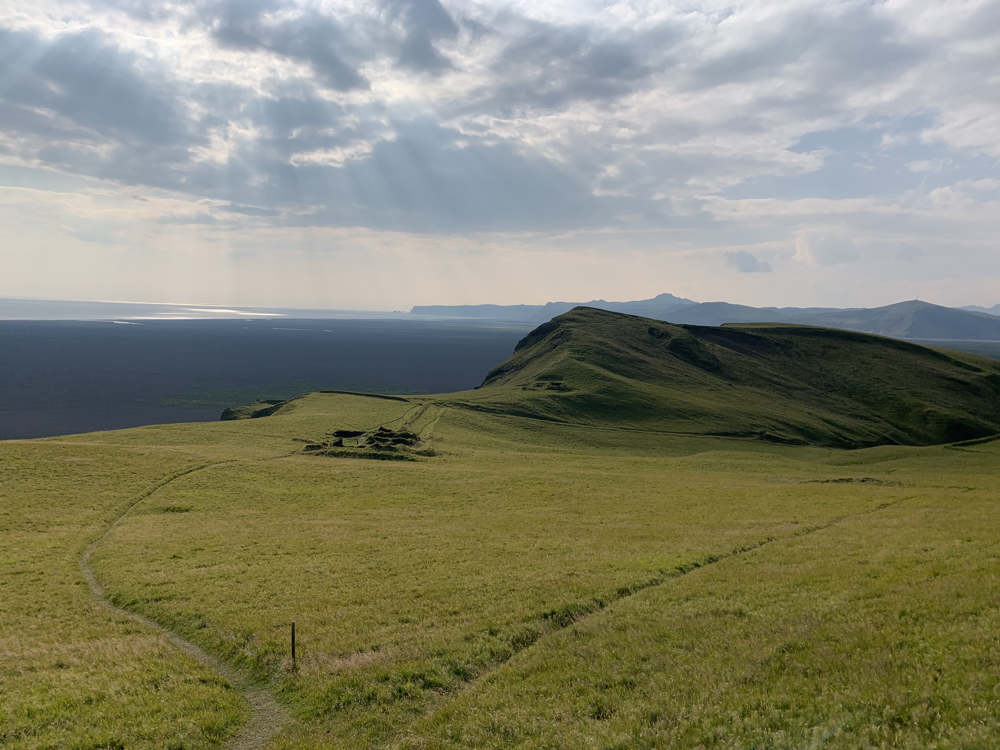

In August 2022, myself and a group of students from all over the U.S. participated in a research internship expidition to Iceland. We traveled along the 'Golden Circle', a highly popularized 'driving' trail with various stops in different cities along the way. Here are those places listed in chronological order:

Photo Credit: Alyssa Laffin, 2022
Map authored by Alyssa Laffin